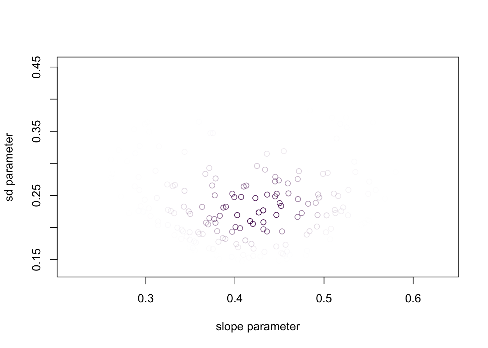

suppressPackageStartupMessages(require("dplyr"))
df = read.csv("../data/hubble-1.csv") %>%
rename(distance = R..Mpc.) %>%
rename(velocity = v..km.sec.)
df$velocity = df$velocity/1000
rmarkdown::paged_table(df)(Normal) regression
Outline
Topics
- A second example of a Bayesian model based on a linear model, this time with a normal likelihood.
- Priors on the positive real line.
- Homoscedasticity and heteroscedasticity.
- Marginal posterior.
Rationale
Together with classification (previous page), regression is the other major statistical task frequently encountered.
We see here that the same approach as we took for classification can be easily modified to do regression.
This provides us with a second example of Bayesian GLMs.
Example
- In the early 20th century, astronomers made the startling observation that pretty much all galaxies are moving away from ours. Why?
- We now know this is because the universe is expanding.
- Here is a metaphor to help understand this:
- Imagine ants on an inflating balloon.
- You are one of the ants…
- …and you notice that all the others ants are moving away from you…
- …and the further the neighbor ant, the faster it looks like it is moving away from you.
- In 1929 the astronomer Edwin Hubble published a paper1 on the relationship between distance and velocity of galaxies relative to us.
- It is now called Hubble’s law.
- The estimated slope of the relationship, known as Hubble’s constant, leads to an estimate of the age of the universe.
Data
- We will estimate Hubble’s constant using data from the original data used by Edwin Hubble (in CSV).
- To make the numbers less extreme in the following, I will divide the velocities by 1000
Instructions:
- download the CVS
- copy paste the code below and run it on your computer (after changing the path “
../data” to the path on your computer)
- Here is some EDA on that dataset:
plot(df$distance, df$velocity, xlab = "distance", ylab = "velocity")Building a Bayesian regression model
Goal:
- designing a model containing a “slope” parameter,
- from which we will compute \(\mathbb{E}[\text{slope} | \text{data}]\).
To achieve our goal, we will complete the gap in the following code:
source("../../solutions/simple.R")
regression = function() {
# priors will be defined here
# ...
for (i in 1:nrow(df)) {
distance = df[i, "distance"]
velocity = df[i, "velocity"]
# likelihood will be defined here
}
return(slope)
}
posterior(regression, 1000)- Recall: to build a model, start with the observations.
- Specifically, let us build a model for the observed velocity first.
Question: what would be a reasonable likelihood for the velocity?
- velocity \(\sim\) Exponential(…)
- velocity \(\sim\) Uniform(…)
- velocity \(\sim\) t(…)
- velocity \(\sim\) Normal(…)
- None of the above.
Click for answer
We have that velocity \(\in \mathbb{R}\), so the exponential (\(\in (0, \infty)\)) and the uniform (\(\in [a, b]\)) are not great choices.
Both the normal and the t-distribution are reasonable.
The t-distribution can have fatter tails, so if the data has outliers this may be preferable but we will stick with the simpler normal choice today.
Erratum: I said in class it might be reasonable to use a uniform distribution where the bounds are the speed of light. It turns out to be incorrect: galaxies can recede from us faster than the speed of light!
Click for next step
Question: What should we use as the mean parameter of the normal likelihood?
Use the fact that the scientific question is “to find a linear relationship of the velocity as a function of the distance.”
- velocity \(\sim\) Normal(0, …)
- velocity \(\sim\) Normal(distance, …)
- velocity \(\sim\) Normal(distance * slope, …)
- velocity \(\sim\) Normal(distance * slope + intercept, …)
- None of the above.
Click for answer
Here the best answer is:
velocity \(\sim\) Normal(distance * slope, …).
We do not need an intercept, because we know that by definition, our velocity relative to ourself is zero.
Click for next step
Question: What should we use as the standard deviation parameter of the normal likelihood?
- velocity \(\sim\) Normal(…, some constant)
- velocity \(\sim\) Normal(…, some random variable)
- velocity \(\sim\) Normal(…, some random variable * distance)
- None of the above.
Click for answer
Using a constant standard deviation is not ideal as the model will be sensitive to that choice.
The other choices are a priori reasonable and more domain knowledge would be needed to pick one. The choice:
velocity \(\sim\) Normal(…, some random variable * distance)
means that we expect that the variability of the galaxy velocities increase for galaxies that are further away. This could happen for example if the variability is dominated by measurement error for a measurement technique where errors increase linearly with distance.
The choice:
velocity \(\sim\) Normal(…, some random variable)
would be more reasonable if the measurement error is negligible and the variability comes from other phenomena affecting the velocity of galaxies which are not expected to behave differently for close vs far galaxies (in our metaphor, think of ants walking in random directions at the same time as the balloon is expanding).
These are examples of heteroscedasticity (variability changes with input variable) and homoscedasticity (variability is invariant to input).
Let us pick an homoscedasticity model. To summarize what we have so far:
velocity \(\sim\) Normal(distance * slope, sd).
Click for next step
Question: Pick priors for the “slope” and “sd” parameters
- slope \(\sim\) Normal(…), sd \(\sim\) Normal(…)
- slope \(\sim\) Normal(…), sd \(\sim\) Exponential(…)
- slope \(\sim\) Exponential(…), sd \(\sim\) Exponential(…)
- None of the above.
Click for answer
We do not want a normal for the standard deviation (sd) parameter, because negative sd’s are not allowed.
Using an exponential for the slope would violate Cromwell’s rule.
Hence the best choice here is:
slope \(\sim\) Normal(…), sd \(\sim\) Exponential(…).
Question: complete the code and approximate \(\mathbb{E}[\text{slope} | \text{data}]\).
Click for choices
Pick the closest:
- \(\approx 0.1\)
- \(\approx 0.5\)
- \(\approx 1\)
- \(\approx 2\)
Click for answer
source("../../solutions/simple.R")
source("../blocks/simple_utils.R")
regression = function() {
slope = simulate(Norm(0, 1))
sd = simulate(Exp(10))
for (i in 1:nrow(df)) {
distance = df[i, "distance"]
velocity = df[i, "velocity"]
observe(velocity, Norm(distance * slope, sd))
}
c(slope, sd)
}
posterior(regression, 1000)[1] 0.3938742 0.2411316Visualization of the posterior distribution
posterior = posterior_particles(regression, 10000)
weighted_scatter_plot(posterior, plot_options = list(xlab="slope parameter", ylab="sd parameter"))
plot(df$distance, df$velocity, xlab = "distance", ylab = "velocity")
xs = seq(0, 2, 0.01)
samples = posterior$samples
norm_weights = posterior$weights / sum(posterior$weights)
for (i in 1:nrow(samples)) {
slope = samples[i, 1]
pr = norm_weights[i]
lines(xs, slope * xs, col = rgb(red = 0, green = 0, blue = 0, alpha = pr*20))
}Here since the scientific question only concerns one parameter, the slope, it is useful to look at the marginal posterior distribution.
- In mathematical expressions, obtained by marginalization: \[p(x_1 | y) = \int p(x_1, x_2 | y) \mathrm{d}x_2.\]
- In Monte Carlo methods, much simpler:
- each sample is a pair \(x^{(m)}= (x_1^{(m)}, x_2^{(m)})\)
- if you are interested in \(x_1\) only, just ignore \(x_2\)!
Here is an example of creating a histogram for the marginal posterior:
library("ggplot2")
posterior.as.df <- data.frame(slopes = samples[,1], norm_weights)
ggplot(posterior.as.df, aes(x = slopes, weight = norm_weights)) +
geom_histogram(binwidth = 0.02) +
xlim(0.2, 0.6) +
xlab("slope parameter") +
ylab("probability") +
theme_minimal()Question: if you were to use an integral instead of Monte Carlo to create this histogram, what region of integration in the scatter plot above (the first plot in this subsection) would be used to compute the height of one histogram bin?
Click for choices
- “—”
- “|”
- “◤”
- “◢”
- None of the above
Click for answer
The answer is “|”.
Model criticism
The answer we obtain is close to Edwin Hubble’s original estimate.
The modern estimate based on state-of-the-art measurements (space telescopes, advanced statistical models) gives an estimate that is about 10x smaller.
Discussion: What went wrong?
Footnotes
Proceedings of the National Academy of Sciences, Vol. 15, pp. 168–173.↩︎